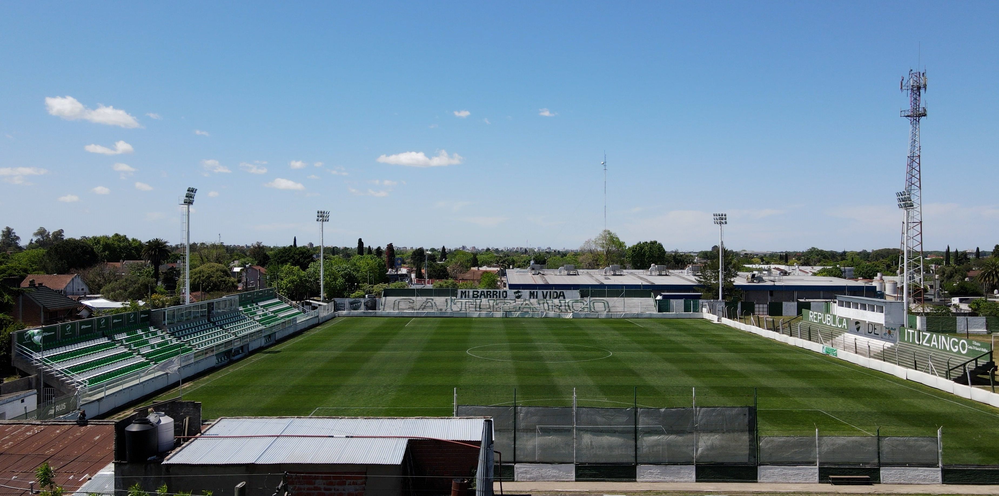

Sede Social
El Club Atlético Ituzaingó tiene entradas sobre las calles Los Pozos (principal) y sobre 24 de octubre (acceso al natatorio), y está ubicado a una cuadra y media de la Estación de trenes de Ituzaingó. Su sede es muy amplia, de estilo moderno y equipada para la práctica de diversos deportes.
Las instalaciones cuentan con salón cubierto, gimnasio, salas para reuniones, auditorio, cancha de fútbol 5 techada, pileta climatizada en natatorio vidriado, solárium, videojuegos y buffet. Además, a 400 metros de la sede social, el club tiene un estadio de fútbol profesional con capacidad para 5 mil espectadores, que también dispone de canchas de hockey y fútbol infantil.
A lo largo de su historia, el CAI estuvo ubicado en distintos lugares: la casa de Don Piparola (Juncal 175), la casa de Pedro García (Zufriategui 625), el Café de Bagnacedri (Las Heras y Zufriategui), Los Altos de Pastre (Mariano Acosta y 24 de Octubre) y en Pacheco y Rondeau (entre 1933 y 1937).
Puede alquilarse en uso exclusivo para el festejo de cumpleaños y eventos y cuenta con equipo de sonido para fiestas.
Reservas, delivery y más información general, llamando al 4623-4163.
El club dispone de una amplia y agradable confitería que expende bebidas, licuados, batidos, tragos, helados, pizzas, empanadas, panchos, pollo, milanesas, ravioles, tallarines, ñoquis, minutas, cafetería y plato del día, además de disponer de un kiosco con abundante oferta de productos.
Dispone de TV por cable, sector de videojuegos y servicio de Wi-Fi gratuito.
Estadio Carlos Alberto Sacaan
En 2012, y tras una votación realizada por internet, los hinchas decidieron que el nombre del Estadio sea «Carlos Alberto Sacaan» en reconocimiento al dirigente más importante en la historia del club.
El estadio cuenta con vestuarios, parrillas y buffet y actualmente, espera el cumplimiento de un nuevo proyecto: la construcción de canchas auxiliares de césped sintético.
Con medidas reglamentarias del campo de juego -101,25 metros de largo por 68.15 metros de ancho- la capacidad total del estadio es de 5 mil personas distribuidas de la siguiente manera: 2.200 popular local, 2400 popular visitante y 1.000 en la platea local.
En el interior del estadio podrás encontrar el buffet, un punto de encuentro obligatorio en la previa de cada partido. Remodelado recientemente y atendido con la amabilidad que caracteriza a sus anfitriones, cuenta con parrilla y ofrece sándwiches, bebidas, golosinas y helados
En 2020 se remodeló por completa la platea, que hoy alberga a 1.000 personas y cuenta con butacas y nueves palcos VIP.
El 13 de octubre de 2021, en lo que fue un empate ante Excursionistas 1 a 1 por la Primera C, quedaron inauguradas las nuevas luminarias y el Verde jugó por primera vez en la historia como local (en torneos de AFA) en horario nocturno.
Redes Sociales
-
Instagram: @ItuzaingoPrensa

- Facebook: @ItuzaingoPrensa
-
Tiktok: @Ituzaingo

-
X: @ItuzaingoPrensa

-
Youtube: @Ituzaingo